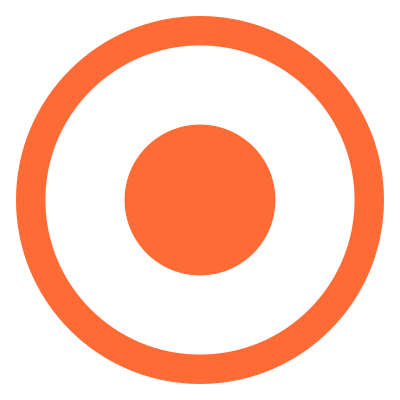
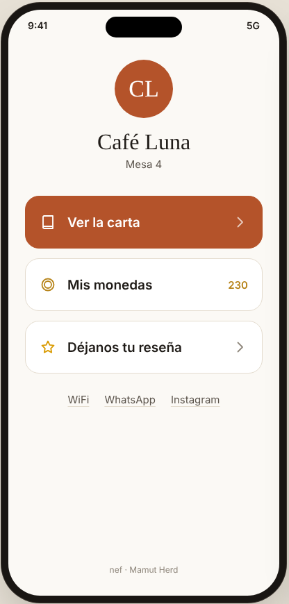
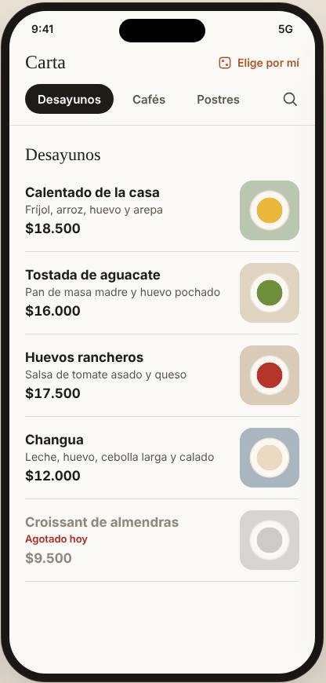
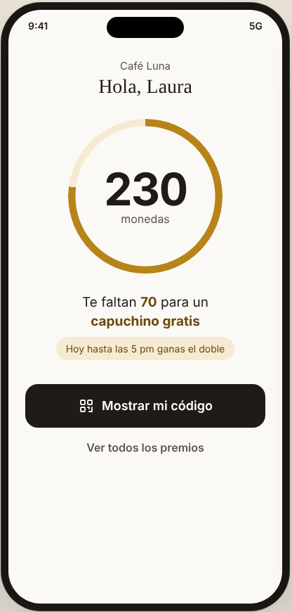

Clientes que vuelven.
Un punto en la mesa o en la máquina. Tu cliente acerca el celular, ve tu carta, junta monedas y te deja la reseña. Tú sabes quién dejó de venir.


Tres pasos. Ninguno es descargar una app.
Acerca el celular
Al punto de la mesa, la recepción o la máquina. Si no tiene NFC, escanea el QR.
Ve tu portal
Tu carta, tus clases, sus monedas. Tres botones grandes, nada que buscar.

Vuelve
Cada visita suma. Y si deja de venir, te avisamos para que le escribas.

Hecho para el café de la esquina y para el gimnasio de tres pisos.
La reseña llega justo después del postre.
- Carta siempre al día: marcas "agotado" desde el celular.
- Club de monedas que el cajero suma en 3 segundos.
- El botón de reseña aparece cuando el cliente está contento.
Sabe quién se va antes de que cancele.
- Usamos las entradas de tu torniquete. No instalas nada nuevo en la puerta.
- Cada máquina con su video de cómo usarla.
Tres números y una lista.
Quién volvió, quién está en riesgo y cuántas reseñas pediste. Todos los lunes, sin abrir un Excel.
No te entregamos datos. Te entregamos decisiones.
Cada trimestre, un estudio estadístico de tus clientes: quién tiene más probabilidad de irse, si la promoción de los martes sí funcionó, a qué hora necesitas más personal.
Lo hace Jacobo López, matemático, y te lo explica en 15 minutos, sin tecnicismos.